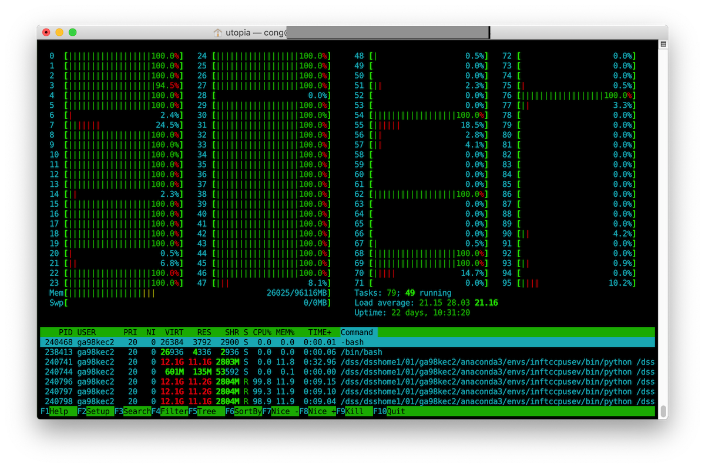
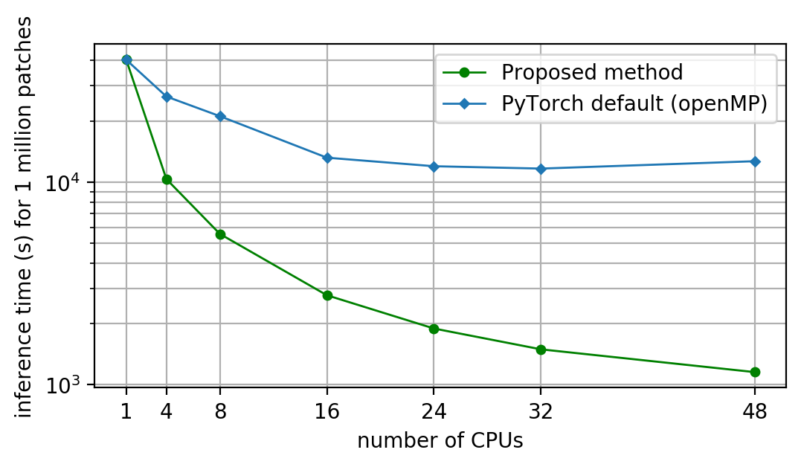

The low efficiency of CPU-based PyTorch on HPC systems remains a challenge. For example, launching a job on one node and using all 48 CPUs yielded only a ~4–8× speedup, depending on the CNN architecture. Using htop, I confirmed that all CPUs were active, indicating that the threads were correctly distributed; however, saturation occurred too early. Conventional system-level approaches include setting CPU affinity and configuring non-uniform memory access (NUMA). After testing both, I found that neither improved performance by more than 5%. One possible reason is that affinity and NUMA may benefit simpler workloads, whereas massive matrix operations are less responsive to such system-level tuning. The PyTorch documentation illustrates this general issue.
In this article, I share a method for improving parallelization performance in a shared-memory system, rather than single-core performance, which is comparatively well addressed (e.g., through MKL-DNN and C++ implementations). If you encounter the same issue while performing inference on very high-resolution images (e.g., 108 pixels) with the CPU version of PyTorch, this approach may help.
First of all, let's take a look at the software configurations:
Python 3.6.8 PyTorch (version 1.3.0) built with : - GCC 7.3 - Intel MKL 2019.04 for Intel 64 architecture - Intel MKL-DNN 0.20.5 - OpenMP 4.5 - NNPACK enabled - BLAS = MKL
and specifications for the test machine, which has 96 GB of RAM:
model name : Intel(R) Xeon(R) Platinum 8174 CPU @ 3.10GHz stepping : 4 cache size : 33792 KB siblings : 48
As shown above, PyTorch was built with OpenMP and MKL-DNN rather than CUDA, so this is a CPU-based build. For inference on a high-resolution image, relying solely on OpenMP—the default parallelization mechanism—with a few system-level adjustments did not provide substantial speedup. I therefore disabled OpenMP parallelism by setting the relevant environment variables in the Python script and setting the number of PyTorch threads to one. If CPU affinity or binding was configured previously, it should also be removed.
os.environ['OMP_NUM_THREADS'] = '1' torch.set_num_threads(1)
OK, now we enter the domain that allow us to develop our own parallelization code. A very natural mind came up to me is spawning 48 processes (yes, processes instead of threads), so that each process and its corresponding memory space is independent (yes, sounds like CPU-RAM affinity). In order to do so, after loading the image into numpy array, we can split the array into 48 partitions, and assign each partition to a single CPU to isolate the memory space.
An important point is spawning multiple processes (memory isolated) is not identical to multithreading (memory shared within parent process). Now we need to pin each memory space for a single CPU (otherwise we will not gain higher performance than OpenMP), there are handful ways for implementation, but the python map based methods seems not working for me. I suggest to write the PyTorch inference code (mainly the iteration part) as a function and spawn it into 48 process by using multiprocessing.Process() method as the code below indicates.
import psutil
import torch.nn.functional as F
import multiprocessing as mp
def model_IO_cpu_pin(cood, pubobj, model, affinity):
proc = psutil.Process()
proc.cpu_affinity(affinity)
nbatch = len(cood)
with torch.no_grad():
for i in range(nbatch):
tomod = from_cood_2_sampbatch(cood[i]) # I defined for batch array
tomod = torch.from_numpy(tomod)
tomod = F.interpolate(tomod, size=(224,224))
......
if __name__ == '__main__':
allprocs = []
for cpu in range(48):
affi = dict(affinity=[cpu])
p = mp.Process(target=model_IO_cpu_pin, args= (coodcpu[cpu], \
zeros_lcz_map_sm, model, ), kwargs=affi)
p.start()
allprocs.append(p)
for p in allprocs:
p.join()
The code clause above basically implement the process generation for each physical CPU to be computed independently, just in case you are curious about the pubobj in the code, it is a publicly writeable object for each process, I use the numpy.ctypeslib to create the ctype array to pass it as the argument.
So back to our topic, what exactly happened when we run it? I put a htop screenshot here, from which you can see that indeed 48 processes have been allocated for each physical CPU.

To briefly introduce my benchmark method, I generated ~ 4 million image patches with resolution 224 x 224 pixels, then I use the Resnet18 with customized FC class number to compute these patches in MKL-DNN domain and measure the running time to evaluate the performance for different number of CPUs. I use this method to measure the parallelization performance of the default parallelization and my proposed method. The full benchmark results are illustrated below.

Isn't the result amazing! For the default parallelization, the saturation effects started with 16 CPUs, and eventually there is only maximum ~ 4 x speed up compared with single CPU, meaning you basically waste a tremendous amount of computational resources. However for my proposed method, the performance is nearly linearly proportional to the number of CPUs, which is ~ 10 x faster than the default solution. Our design and implementation works.
I am actually rather curious about the deeper reason why the PyTorch with OpenMP somehow is significantly slower than the theoretical max. I think, firstly, the default is threads based parallelization; secondly, OpenMP specification is rather complicated, and not much people use CPU based PyTorch, so the optimization of CPU version didn't gain much attention. However, I would assume, the availability of the industrial grade GPU (e.g. Nvidia P100/V100/A100) in most of the data centers is still lower than the CPU based computing resources, so I think it worth to excavate the potentials from CPU based architecture for deep learning community, especially when it comes with big data. (last edit: 2021)
Created by Cong in 2021.